Ваше здоровье - это наша жизнь
Наша клиника.
Йоханнесбад - это специализарованная клиника,
но наши пациенты чувствуют себя здесь не как в больнице,
а как в хорошем отеле со всеми удобствами и комфортом.
 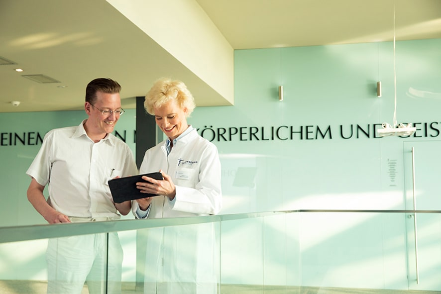
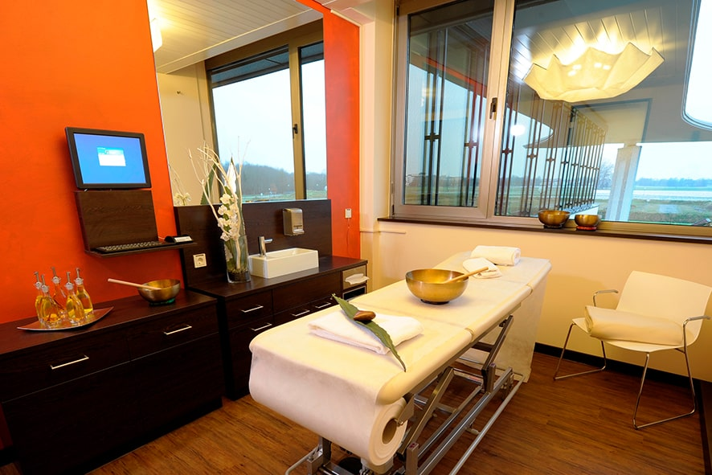
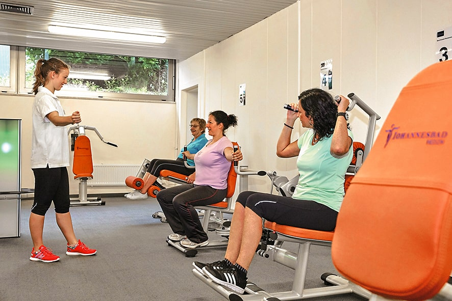
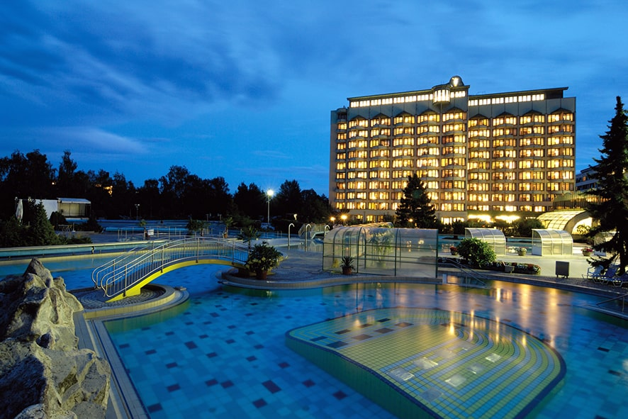
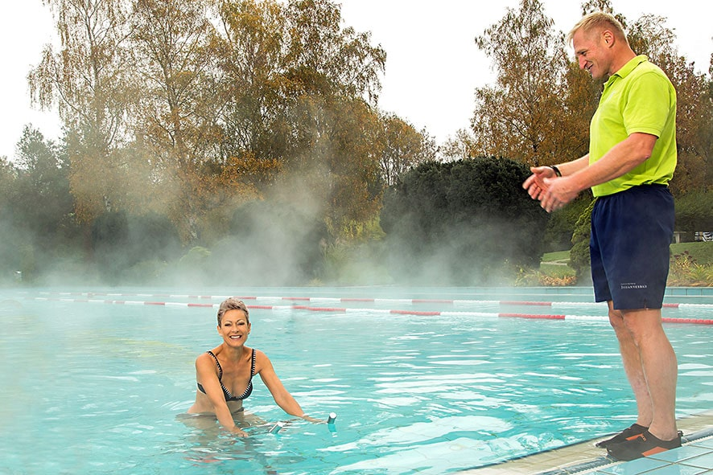
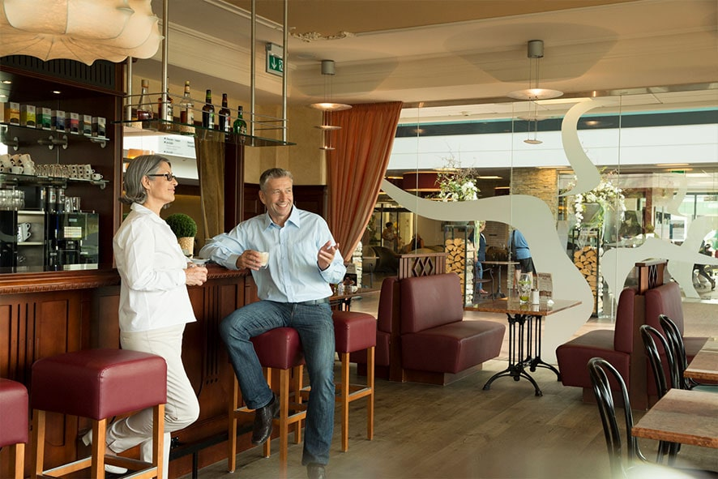
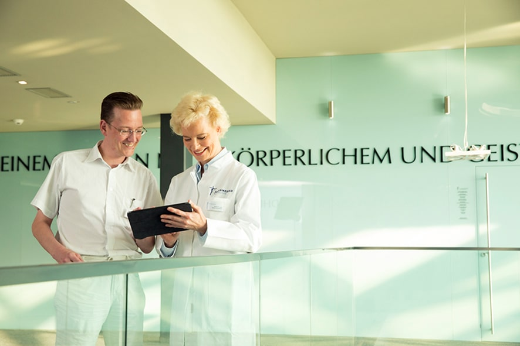
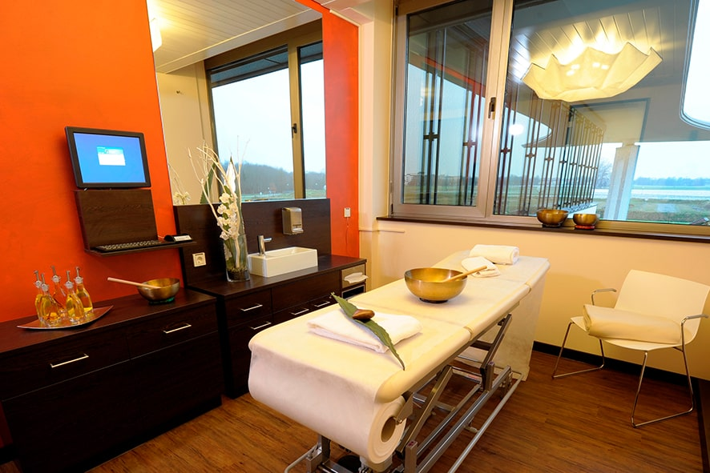
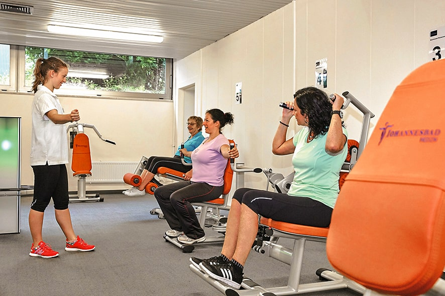
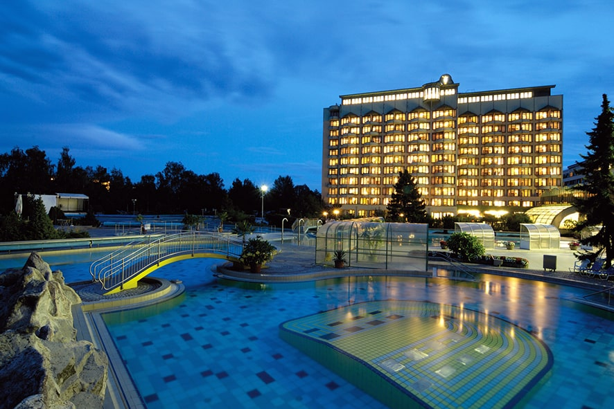
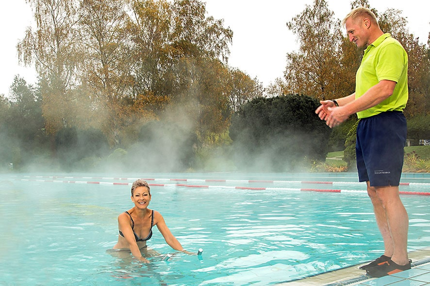
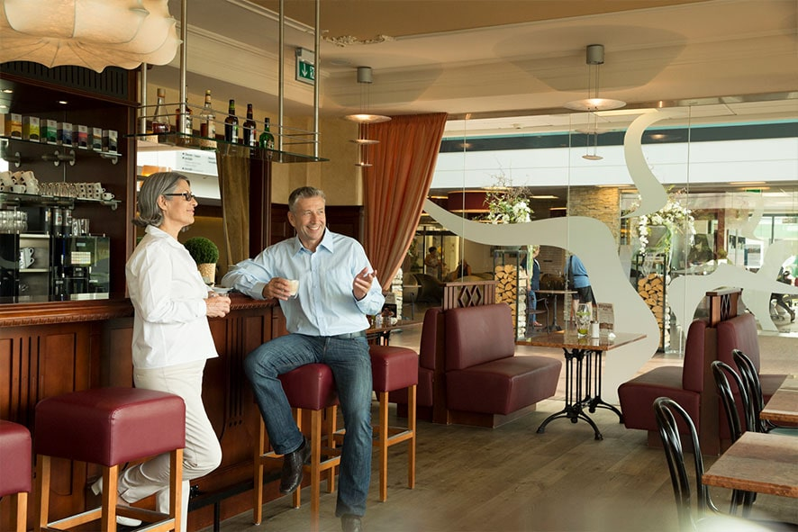
Клиника находится в тихом баварском городке Бад Фюссен, Германия. Вода из-под крана альпийская и сертифицирована, как полезная питьевая вода. В непосредственной близости расположены города: Мюнхен, Пассау, Линц и Зальцбург. К вашим услугам комфортные, полностью оборудованные всем необходимым номера: балкон с живописным видом, отдельная ванная комната, кресло для релаксации, письменный стол и стулья, телевизор со спутниковыми каналами, бесплатный и неограниченный Wi-Fi, телефон, холодильник, сейф. Завтрак, обед и ужин готовятся из самых свежих продуктов местных поставщиков поварами нашего ресторана. Наша цель - не просто лечить тело, но создать благоприятную атмосферу, чтобы добиться внутренней гармонии. Ведь именно она - залог здоровья! Вы можете полностью расслабиться в наших профессиональных и заботливых руках.